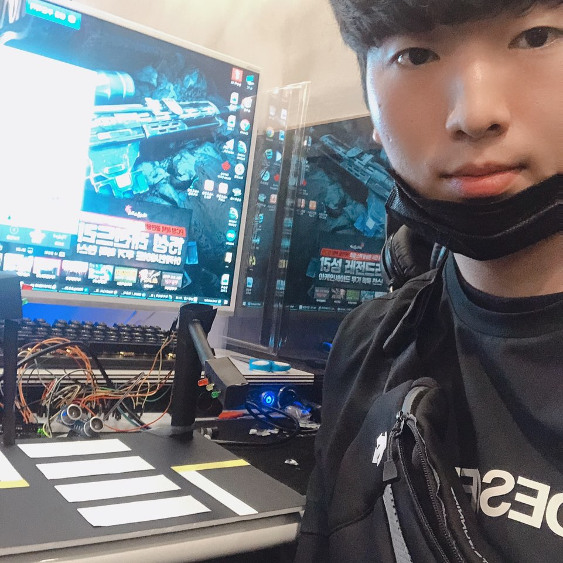

자기소개
저는 동의과학대학교 컴퓨터정보학과를 졸업 예정이며 학회장을 맡고 있는 한승목입니다. 자바 연구회 동아리 회장도 겸하면서 학우들과 신뢰와 친밀을 형성하며 깊은 교우관계를 유지하고 있고, 고등학교 때 부터 컴퓨터 IT쪽 분야에 관심을 기울여 관련 자격증을 취득하고 지식을 쌓는데 노력을 하고 있습니다. 현재 졸업을 앞두고 IT기업에 취업을 목표로 열심히 하고 있습니다. 어떠한 일이든 낮은 자세에서 집중하고 경청하여 맡을 일에 최선을 다하도록 매사에 노력하겠습니다.